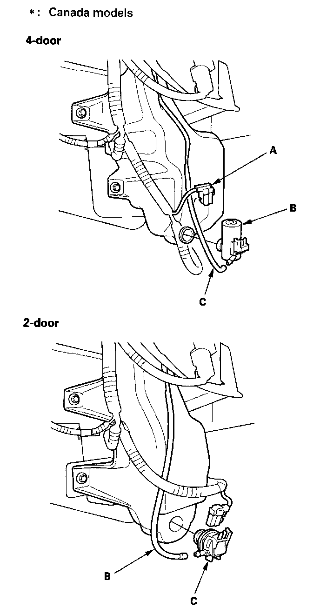
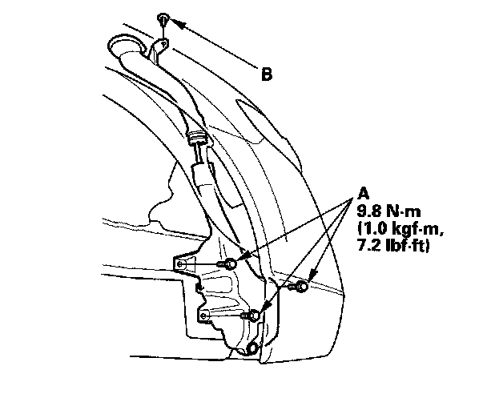

Windshield Washer Reservoir: Service and Repair
Washer Reservoir Replacement1. Remove the right inner fender.
- 2-door
- 4-door

2. Disconnect the 2P connector(s) (A) from the windshield washer motor (B) and the washer fluid level switch.
*: Canada models
3. Disconnect the windshield washer tube (C).

4. Remove the bolts (A) and the clip (B), then remove the washer reservoir.
5. Install in the reverse order of removal.